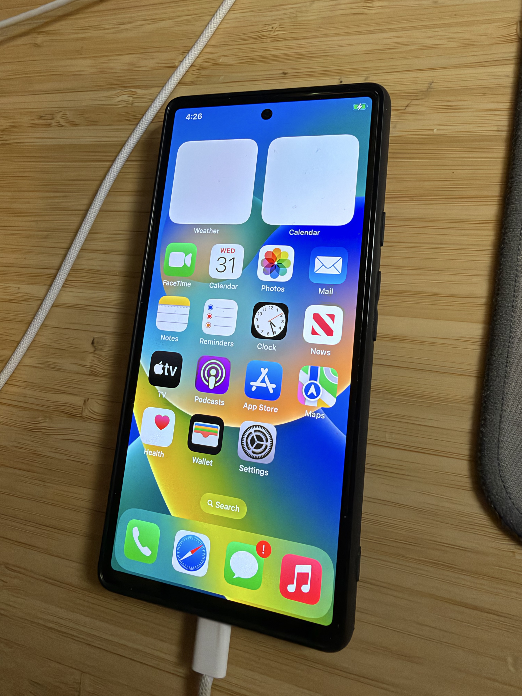
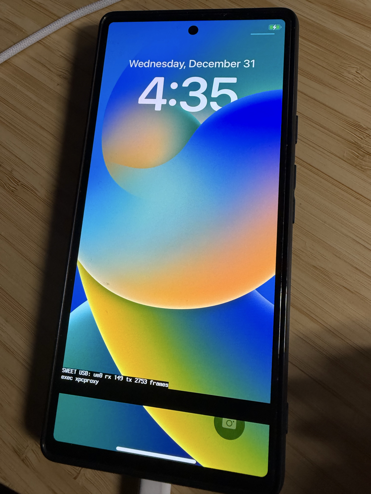

Boot and userland
A temporary boot image hands off through a GS101 shim to patched XNU. The iOS HFSX root mounts and launchd, backboardd, and SpringBoard run.
RESEARCH MILESTONE 01 / OCT 2026
An experimental iOS 16 port for the Google Pixel 6. One physical device has booted into SpringBoard, reached the Home Screen, and opened Settings through touch.
Developer research prototype · Not a public installer

01 / VERIFIED ON HARDWARE
Milestone 1 is a measured result from one Pixel 6, with explicit boundaries around what has and has not been tested.
A temporary boot image hands off through a GS101 shim to patched XNU. The iOS HFSX root mounts and launchd, backboardd, and SpringBoard run.
The physical display reaches the iOS lock screen and Home Screen. This photograph shows the latter on the actual phone.
FTM5 events reach XNU HID. The tester entered Home and opened Settings by touch; broader gestures and sustained operation remain unverified.
Safari displayed a blank page when opening Google. The tested image overlays diagnostic text, and automatic iOS startup is not implemented.
02 / SYSTEM PATH
The current path is temporary and developer-operated. The iOS root is read from the phone while runtime writes are held in volatile memory.
fastboot boot temporary imagelaunchd → SpringBoard03 / EVIDENCE & LIMITS
Images are direct photographs of the test phone, not simulations or low-resolution framebuffer reconstructions.

The Home Screen and Settings result came from a single device and one development configuration. It does not establish repeatability on other phones, app compatibility, Internet access, or daily-use reliability.
Android may enter Recovery after a normal reboot because the experimental iOS root occupies userdata. This is not an automatic iOS boot flow.